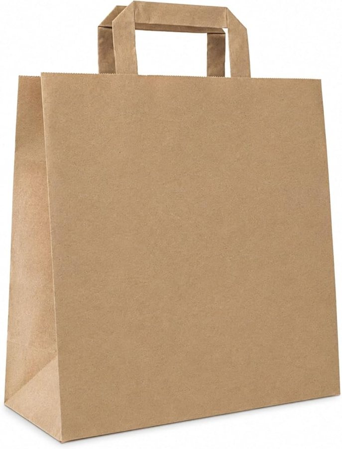
参考图片. 仅示意产品类型，并非中国制造商的产品。
印标志牛皮纸手提袋，带提手，约 32 x 13 x 40 厘米
结实的牛皮纸手提袋，带提手并可印标志，适用于餐食包装、客户礼品和上梁庆典。
技术参数
| 尺寸（宽 x 侧边 x 高） | 约 32 x 13 x 40 cm（常规尺寸，可自选） |
|---|---|
| 纸张 | 牛皮纸，棕色或白色，100 至 120 g/m²，可申请 FSC 认证 |
| 提手 | 纸绳或扁提手，内侧用加固贴片粘合 |
| 袋底 | 粘合袋底，带纸板底部加固 |
| 印刷 | 柔版 1 至 2 色或胶印，标志可印单面或双面 |
| 承重 | 参考值 8 至 10 kg，须在样品上测试 |
| 起订量 | 挂牌起订量 100 个（Nanchang Qianti）；其他挂牌为 1,000 至 50,000 个 |
内部
行程城市内暂无制造商——可在当地（批发市场、展会）询价，或从归档中启用制造商。
- 到岸成本
- €0.17
- 销售价（净价）
- –
- 利润率
- –
- 中国目标价
- –
- 相比德国采购节省
- –
- 最小起订量
- 100 个（Made-in-China 挂牌，Nanchang Qianti）；搜索到的其他挂牌为 1,000 至 50,000 个
- 价格条款
- FOB
每件，净价. 中国价格为挂牌价（未议价）。运费、关税和手续费为估算值；进口增值税可作为进项税抵扣。 假设：按产品组计运费，手续费 3%，售价比德国市场价低 15%，目标利润率 25%。
产品描述
带标志的纸质手提袋是集团在餐食包装、客户礼品和上梁庆典上的门面。
更多
专业的手提袋承重可靠：袋底粘合并加固，提手内侧用加固贴片固定，印刷图案即使受潮也不会蹭掉。德国专业买家期望纸张来自可证明合法的林业（FSC 或 PEFC），并且包装符合 PPWR 要求；进口方即为首次投放市场者，须按《包装法》（VerpackG）办理 LUCID 包装登记并参加回收系统。若手提袋用于烘焙食品或外卖，还需提供食品接触合规证明。
海关
| 海关编码 | 48194000 |
|---|---|
| 关税税率 | 请在 TARIC 中核实 |
标准与标识（德国/欧盟）
VO (EU) 2025/40包装和包装废弃物法规（PPWR）：重金属限值、标识、可回收性VerpackG德国《包装法》：LUCID 登记与回收系统参与EN 13427包装：包装及包装废弃物领域欧洲标准的应用要求FSC-STD-40-004FSC 产销监管链认证标准（FSC 或 PEFC 作为来源证明）VO (EU) 2023/1115EUDR：无毁林供应链（纸制品在适用范围内；请核实当前适用日期）VO (EG) 1935/2004 / BfR XXXVI仅限食品接触用途（烘焙食品、外卖）：食品接触材料法规及 BfR 纸张建议
内部 · 备注
需向供应商索取
- 制造商的 FSC 或 PEFC 许可证编号及产销监管链证书，可在 FSC 数据库中核查，并提供用于 EUDR 尽职调查的来源数据。
- 在样品上做承重和提手拉力测试（例如 8 kg 持续 24 小时），并以检测报告或视频记录。
- 提供带印刷打样的封样，做颜色摩擦和擦拭测试，并书面约定标志的色差容忍度。
- 纸张、油墨和提手的重金属检测报告（铅、镉、汞、六价铬总量不超过 100 mg/kg）。
- 若涉及食品接触：提供符合法规 (EC) 1935/2004 的符合性声明、BfR XXXVI 证明和油墨合规证明；否则注明该袋不用于直接接触散装食品。
- 每只袋的克重和材质数据（用于 LUCID 申报）；要求以营业执照和工厂照片证明其为工厂还是贸易商。
来源
挂牌价区间为每件 0.15 至 0.45 美元，起订量 100 件，依据挂牌商品 Custom Printed Your Own Logo Wholesale Gift Food Grocery Plain Brown Handle Kraft；同一公司另有两条牛皮纸挂牌价为 0.10 至 0.50 美元和 0.15 至 0.45 美元，一条 Tyvek 手提袋挂牌价为 1.20 至 3.80 美元。低价大概适用于大批量；挂牌信息未规定尺寸、纸张克重、提手类型和印刷方式，也未包含印刷版费和运费。页面上的公司简介描述的是另一家公司（Wenzhou Hongdong Crafts），因此是否为制造商尚未核实。另有一条搜索结果中的挂牌信息未注明公司名称（潍坊，1,000 个，0.08 至 0.14 美元），未予采用。未找到带标志印刷纸质手提袋的德国价格（印刷商仅接受询价）；无印刷的参考价来自奥地利（上奥地利州经济商会 WKO）：含 20% 增值税每箱 250 个 51.84 欧元，并非德国来源，因此未作为德国价格采用。
搭配购买
卖家与本产品一起销售的配件、耗材和相关产品。

本类别其他产品
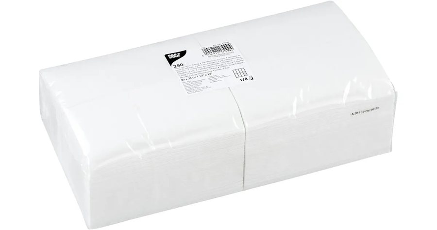
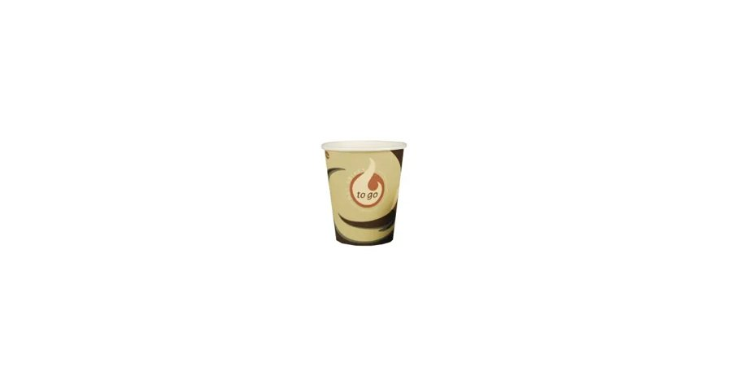
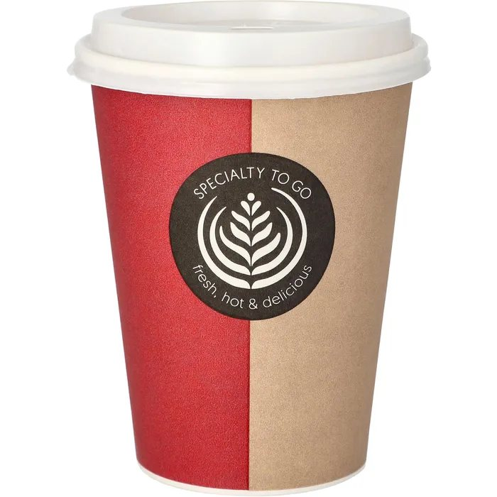
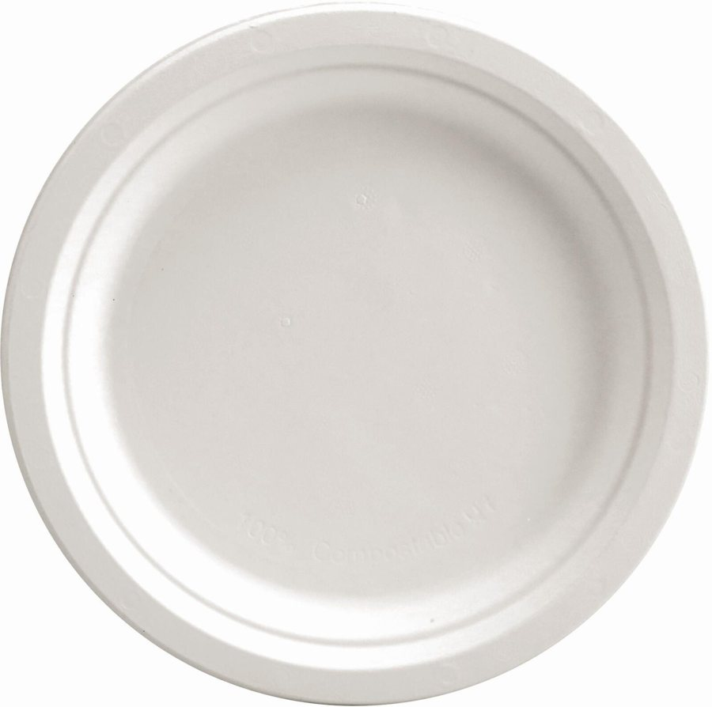
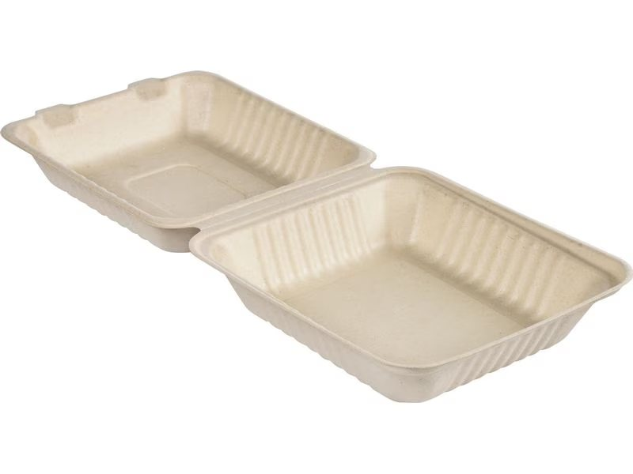
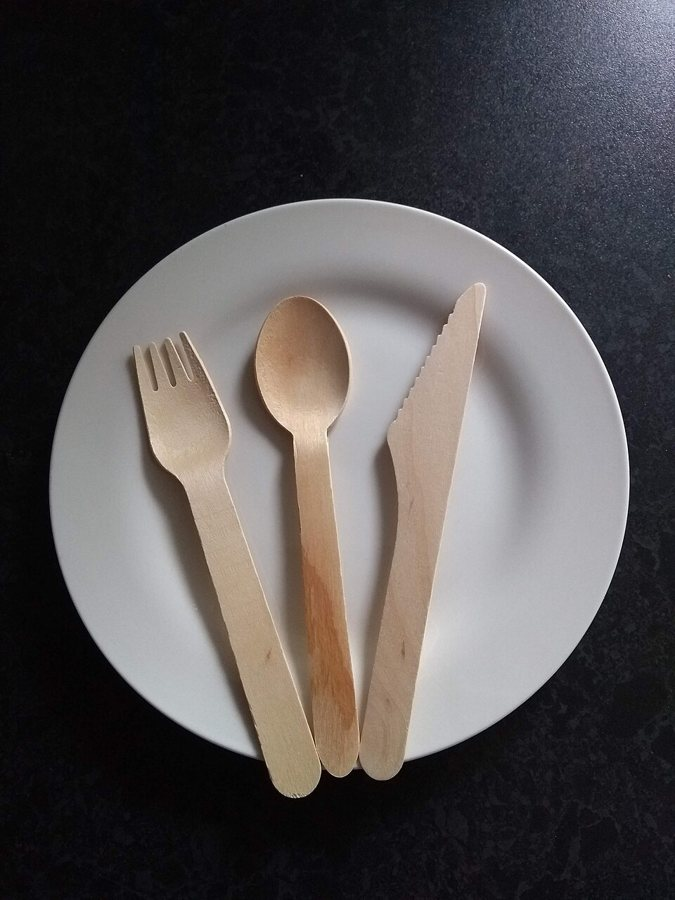

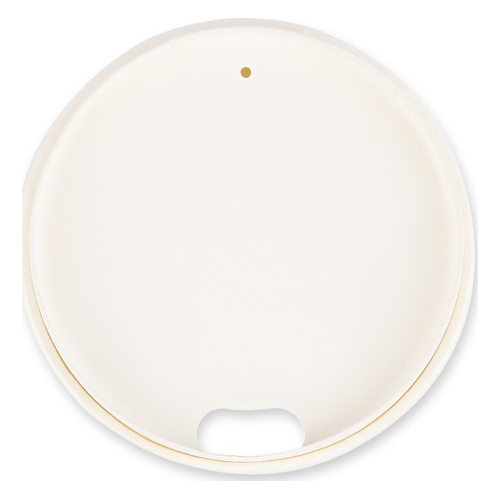
交叉销售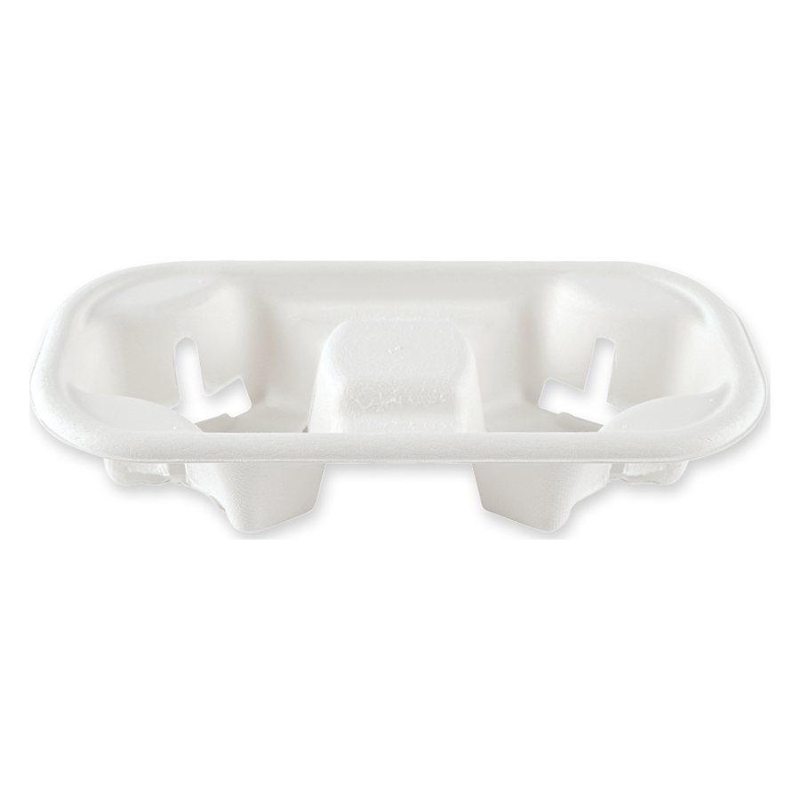
交叉销售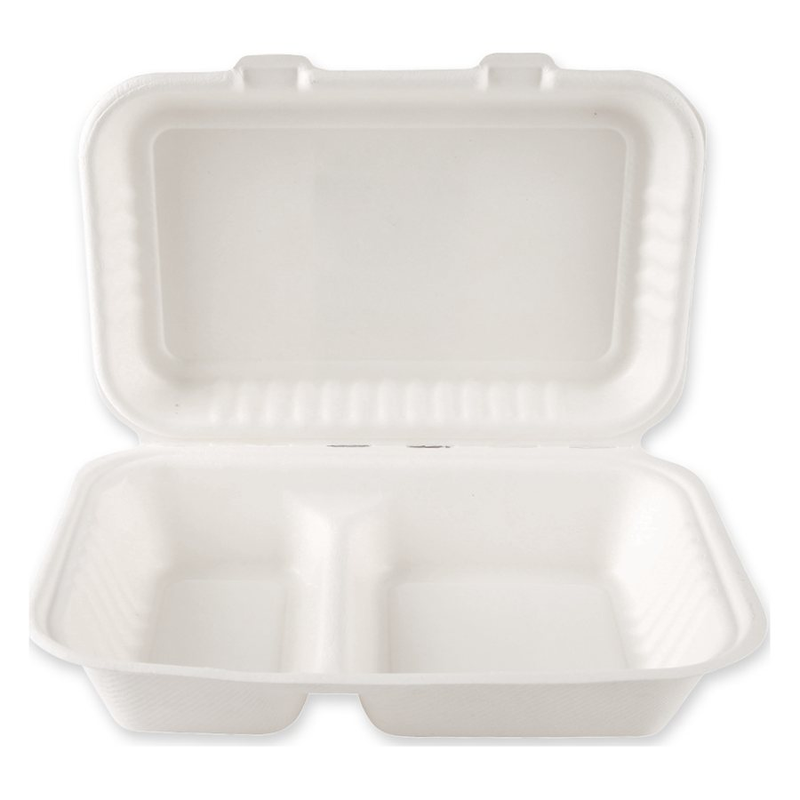
追加销售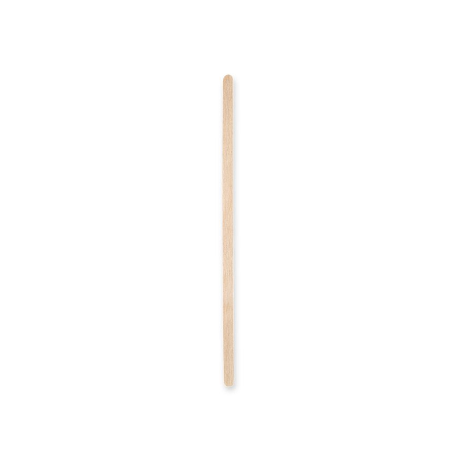
交叉销售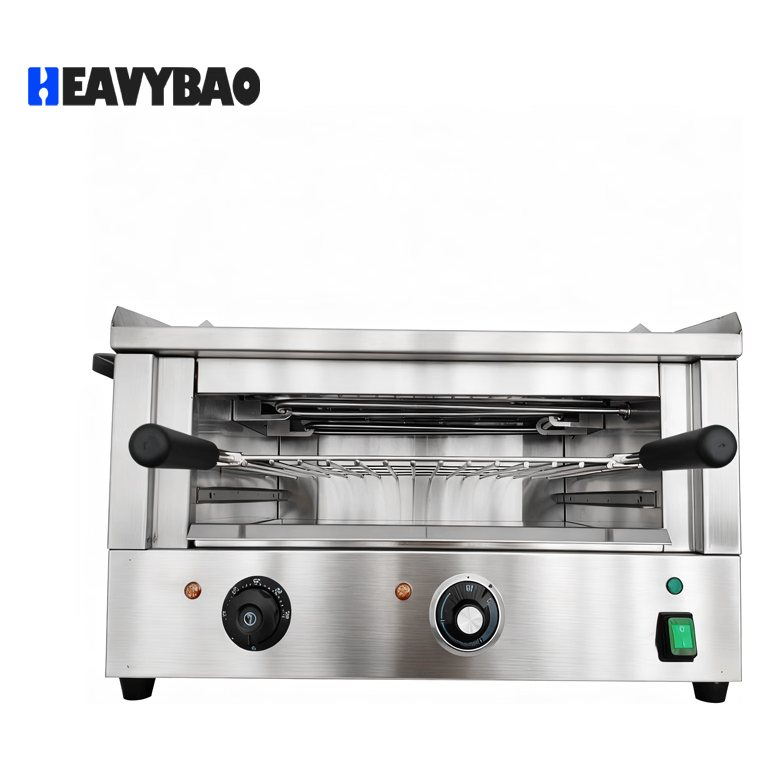
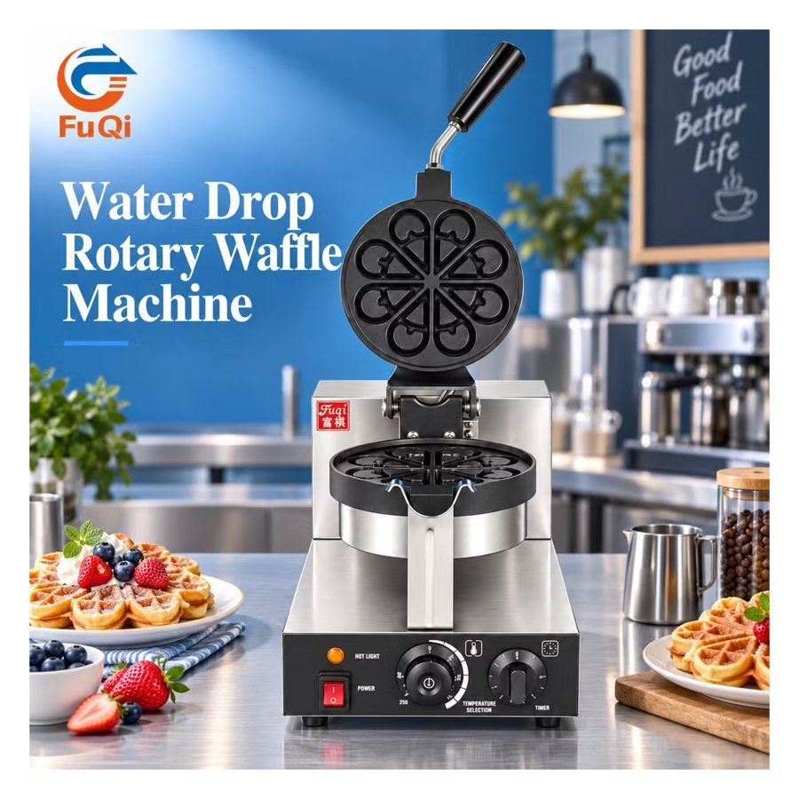
潮流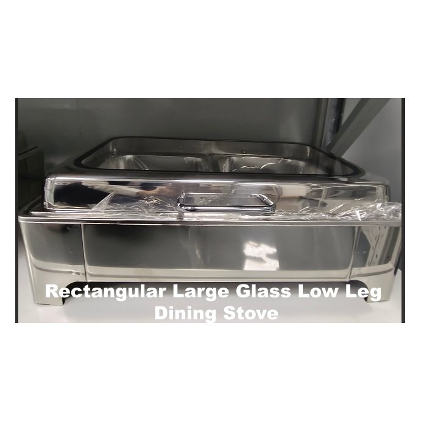
交叉销售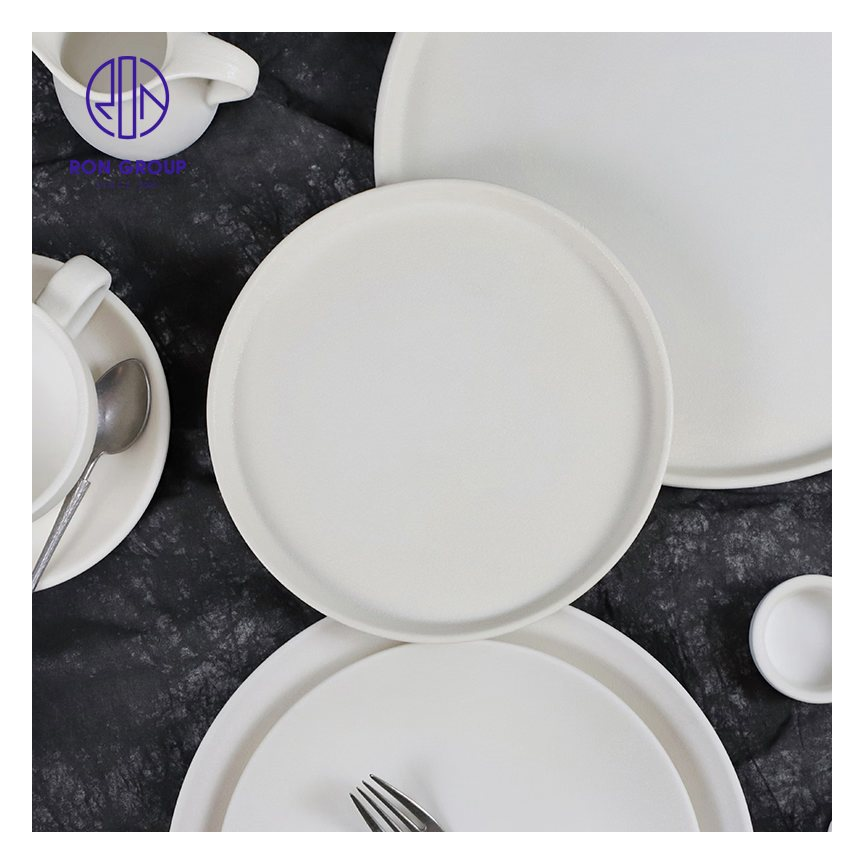
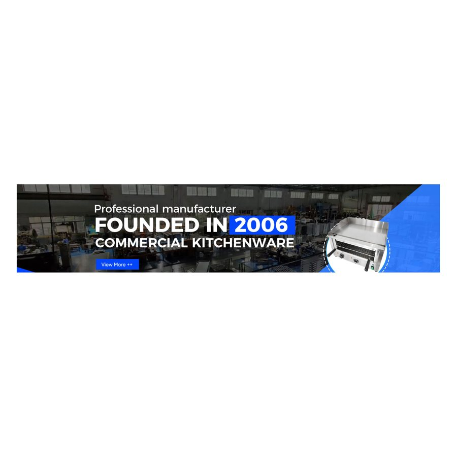
交叉销售 追加销售
追加销售 追加销售
追加销售 潮流
潮流